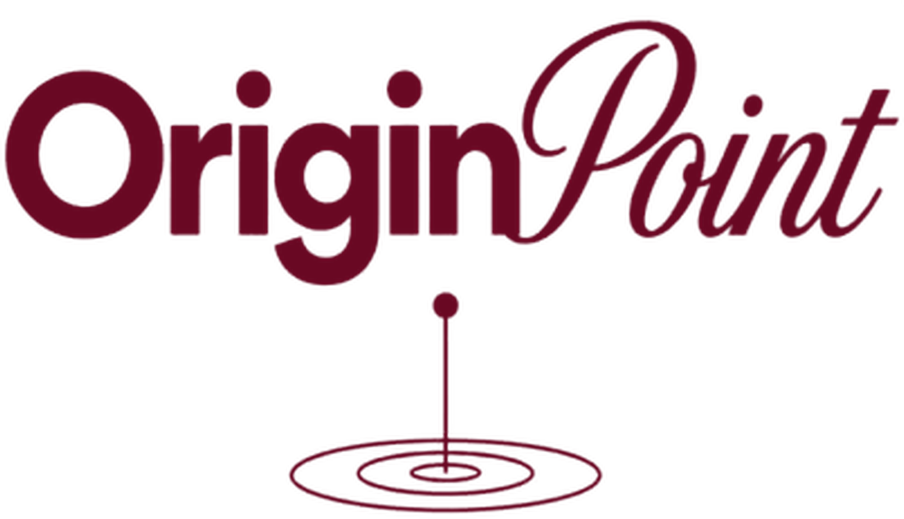

What should the business do next?
We ask where enquiries come from, what customers need, and which task takes too much of your time. Then we agree what to solve first.
The origin
Websites, AI agents and connected business tools. Built and maintained by one partner, from day zero onward.
Stage 1 — Foundation
Brand basics, domain, business email, website and hosting. Everything you need to exist online.
Stage 2 — Customer interaction
Your first AI agent, one customer channel, booking and payment setup, and analytics.
Stage 3 — Data & operations
A database and CRM connect customer records, orders and conversations as your business grows.
Stage 4 — Internal efficiency
Internal tools, connected systems and automated operations replace repeated work and manual spreadsheets.
Stage 5 — Scale
ERP-lite, custom platforms and stronger infrastructure support the next stage of your business.

Clarity at the starting line.
Your business journey
Build the next stage when you need it.
How we work
These are the decisions and deliverables behind a project. The scope changes with your business; the work is agreed before we begin.
We ask where enquiries come from, what customers need, and which task takes too much of your time. Then we agree what to solve first.
We settle the basics before building: the logo files, colours, type and the sentence that explains your offer. Existing brand assets come first.
We work out what a visitor needs to know, then build the pages and enquiry path around it. The phone layout is part of that work.
We agree which details to capture, where they belong and who follows up. An AI agent is useful only when its handoff is useful too.
Before launch, we check the pages, forms, links and phone layouts. We agree who handles hosting, renewals and fixes after handover.
Interactive demonstration
Follow a sample booking enquiry from the website to your team. Select a step to see what each part contributes.
A fictional example of a system we can build. No client results or performance claims.
Explore our capabilities ↗Your customer finds what they need and starts a conversation, without getting lost between tools.
“Can I book a consultation for Tuesday?”
Your website, agents and internal tools share one agreed scope and one point of contact.
Hosting, renewals, maintenance and improvements are scoped with you before launch.
We start with your current workload and the tools you already use. The next stage can wait until you need it.